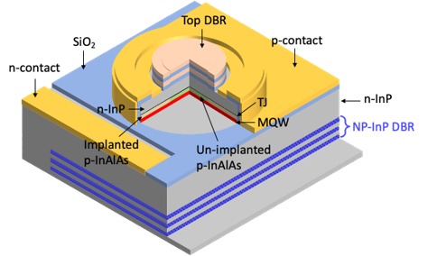

Whitepapers, application notes, and technical briefs on our nanoporous platform technology and target applications.
A comprehensive analysis of why short-wave infrared (SWIR) VCSELs outperform near-infrared (NIR) alternatives for 3D sensing, AR/VR, and LiDAR; covers SNR headroom, eye safety, range extension, and the role of InPHRED's nanoporous DBR in making SWIR VCSELs manufacturable at commercial scale.

How InPHRED's blue/green RC-LED improves health metric accuracy versus conventional broadband LEDs with improved spectral selectivity, better skin-tone independence, and access to new biomarkers.
An introduction to the electrochemical porosification process — how selective anodization of n⁺-InP creates a homoepitaxial Bragg reflector with tunable refractive-index contrast exceeding AlGaAs/GaAs.
How SWIR wavelengths penetrate skin and adipose tissue to isolate blood glucose signal — combining multiple SWIR and NIR wavelengths to address the accuracy limitations of prior NIR-only attempts.
Resonant-cavity LEDs as a low-power, high-bandwidth alternative to VCSELs and copper for die-to-die and chiplet integration — benchmarking bandwidth density and power consumption at <1 pJ/bit.
Why SWIR wavelengths outperform visible and NIR LiDAR for long-range highway ADAS: eye safety at high power, reduced solar background interference, and superior performance in rain, fog, and dust.
We publish new technical resources as our technology matures across SWIR and visible applications. Register your interest to be notified.
No spam. Relevant technical content only. Unsubscribe at any time.
![[EN]](assets/whitepaper-InPHRED_SA-series_for_consumer_sensing.png){kind=link}
![[CN]](assets/cn-whitepaper-InPHRED_SA-series_for_consumer_sensing.png){kind=link}